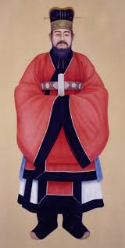

장영실
"동래의 관노에서 종3품 대호군까지, 세종의 지혜를 온몸으로 구현한 조선 최고의 과학자"

- 본관: 아산(牙山)
- 출신: 중국계 귀화인 아버지와 동래현 기녀 어머니 사이에서 태어난 관노(官奴, 천인) 출신.
- 역사적 의의: 신분제의 한계를 극복하고 세종대 과학 기술 발전의 중추적 역할을 담당하며 조선의 자주적 천문·역법 체계의 기틀을 마련함.
- 생몰 연도: 미상
1. 가계 및 신분과 관직 여정 (신분의 한계를 넘다)
- 선대 기록의 차이: 『세종실록』에는 아버지가 원나라 소주·항주 출신으로 조선에 귀화했다고 기록된 반면, 『아산장씨세보』에는 9대조 장서(송나라 대장군)가 고려에 귀화한 것으로 기록되어 차이가 있음.
- 관노 시절: 어머니의 신분을 따라 동래현의 관노로 있었으나, "공교한 솜씨가 보통 사람보다 뛰어나다"는 평가를 받아 태종 대에 이미 조정에 발탁되었고 세종 대에 본격적으로 중용됨.
- 명나라 유학 (1421~1422): 세종의 명으로 윤사웅, 최천구 등과 함께 명나라로 가 천문 기계 제도를 배우고 각종 서적과 도식 견본을 조달함.
- 면천과 상의원 별좌 임명: 귀국 후 흠경각·보루각 건설을 주관함. 세종은 반대 여론(허조 등)을 극복하고 그를 면천시켜 상의원 별좌(관직 진출)에 임명함.
- 무관직 승차: * 1433년: 자격루 제작 공로로 정4품 호군(護軍) 임명, 1438년: 흠경각 천문 기계 완성 공로로 종3품 대호군(大護軍) 승차.
출생과 신분 배경
파격적인 면천과 관직 승진
2. 세종대 과학 기술 업적 (천문 관측 및 시계 제작)
1432년(세종 14)부터 이천, 정초, 정인지 등과 협력하여 기술자 감독 및 제작을 주도함.- 대소간의(大小簡의): 혼천의의 복잡한 구조를 간소화하여 북극 고도 등을 정밀 관측할 수 있도록 경회루 북편 등에 설치한 기구.
- 혼의혼상(渾儀渾象): 천체의 운행과 위치를 관측하는 혼천의(혼의)와 밤하늘의 별자리를 둥근 구면에 표현한 지구의 형태의 혼상을 제작.
- 자격루(自擊漏, 1434): 물의 흐름을 이용해 시, 경, 점에 맞춰 인형이 종·고·징을 자동으로 울리도록 만든 조선 최초의 공공 국가 표준 물시계.
- 앙부일구(仰釜日晷): 솥 모양의 오목한 해시계로, 글을 모르는 백성들을 위해 시신(時神) 그림을 그려 넣어 청계천 혜정교와 종묘 앞에 설치한 최초의 공공 해시계.
- 기타 해시계: 현주일구, 천평일구, 정남일구 등 휴대용 및 방위 지정형 해시계 제작.
- 일성정시의(日星定時儀, 1437): 낮에는 해, 밤에는 별(북극성 주변의 별들)을 관측하여 주야간 시간을 모두 측정할 수 있게 한 시계 (총 4벌 제작하여 중앙 및 전방 군영에 배치).
천문 관측 기구
자주적 시계 및 해시계류
3. 금속 활자 주조 및 광물 개발 업적
- 금속활자 갑인자(甲寅字) 주조 참여: 조선 초기 인쇄술의 정점이라 불리는 아름답고 정교한 금속 활자 '갑인자' 제작에 기여함.
- 국가 자원 및 광물 개발: 1432년: 평안도 벽동에서 푸른 옥(靑玉) 채굴 주관, 1438년: 채방별감이 되어 경상도 일대(창원, 울산, 영해 등)에서 동철(銅鐵)과 연철(鉛鐵)의 생산 및 광업 감독 역임.
4. 안타까운 최후와 역사적 평가
- 1442년(세종 24) 3월, 장영실이 제작 감독을 맡았던 국왕의 가마(안여)가 부러지는 사고가 발생함
- 왕의 안위를 위협한 대역죄로 의금부의 국문을 받았으며, 본래 장(杖) 100대 형이 언도되었으나 세종이 2등을 감형하여 장 80대 처형 및 파직 처분을 받음. 이 사건 이후 장영실의 행적은 역사의 기록에서 완전히 사라짐.
- 서거정의 『필원잡기』 중: > "오직 장영실만이 세종의 지혜를 받들어 기묘한 솜씨를 발휘했고, 그 결과가 모두 세종의 뜻에 부합했다. 그는 시대에 응해서 태어난 인물이다."
- 신분의 벽을 깬 조선 최고의 엔지니어이자, 세종의 브레인들과 협력하여 15세기 조선을 세계 최고 수준의 과학기술국으로 끌어올린 거인으로 평가받음.
안여(安輿) 부러짐 사고와 퇴장 (1442년)
후대의 평가
5. 사후 추증 및 현충 시설 (현창 사업)
- 추증: 영의정(1793년 정조 대 추가 추증), 선무공신 1등 녹훈, 덕풍부원군 추봉.
- 주요 사당: * 아산 현충사(顯忠祠): 숙종 연간(1707년) 사액을 받았으며, 현재 가장 큰 규모의 사당.